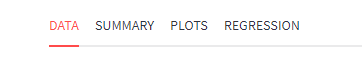
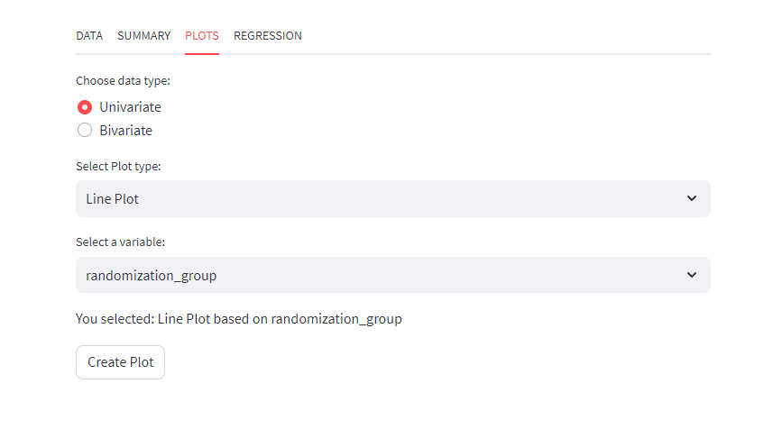
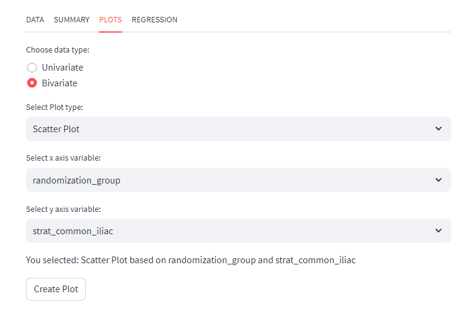
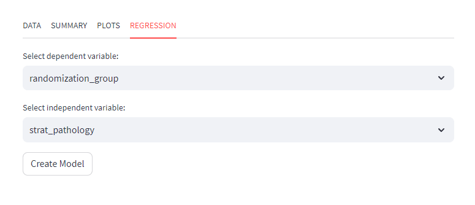

pip install -r requirements.txtAs a data analyst, working with a data set involves several important steps to gain insights and make informed decisions.some important or crucial aspects is:
- Data Set Summary
- Data Distribution
- Data Visualization
- Model building
Python is a great tools to creating application easily lots of the framework are pre build to do that one of the important as respect to analyst is Streamlit.
I am creating a developments application for my working purpose and I share with you and you moderate as your requirements otherwise drop a mail with changes I will help you.
Five things in this application and plug in lots of useful things as per project requirements mainly this version it have:
- Upload CSV
- Data view tab
- Data Summary
- Univariate and Bivariate Plots
- Simple and Multiple regression Models

Its a better practice to create a folder and inside this folders create necessary files. In this project (EasyTask) have three files 1. requirements.txt 2. app.py 3. plot.py.
Open the terminal and go through the directory with write the command
Download all the necessary python module with packages for run this projects. It is the better processes before run jump into the code at first create a virtual environments and activate this environments.
Then copy and past this code on the plot.py files
import streamlit as st
import matplotlib.pyplot as plt
def univariateplot(plot_type, df, variable_name):
if plot_type == 'Line Plot':
plt.plot(df[variable_name])
plt.title('Line Plot')
st.pyplot()
elif plot_type == 'Bar Plot':
plt.bar(df.index, df[variable_name])
plt.title('Bar Plot')
st.pyplot()
elif plot_type == 'Scatter Plot':
plt.scatter(df.index, df[variable_name])
plt.title('Scatter Plot')
st.pyplot()
else:
st.write('Select a plot type.')
def bivariateplot(plot_type, df, variable1, variable2):
if plot_type == 'Line Plot':
plt.plot(df[variable1], df[variable2])
plt.title('Line Plot')
st.pyplot()
elif plot_type == 'Bar Plot':
plt.bar(df[variable1], df[variable2])
plt.title('Bar Plot')
st.pyplot()
elif plot_type == 'Scatter Plot':
plt.scatter(df[variable1], df[variable2])
plt.title('Scatter Plot')
st.pyplot()
else:
st.write('Select a plot type.')Just separate the type of plots in a .py files because it is easy to moderate as per requirements and it connect our app.py file.
import numpy as np
import pandas as pd
import streamlit as st
import statsmodels.api as sm
import matplotlib.pyplot as plt
from plot import univariateplot, bivariateplot
def main():
# st.set_page_config(layout="wide")
st.set_option('deprecation.showPyplotGlobalUse', False)
data_input()
data_output()
def data_input():
# Use Streamlit widgets in the sidebar to get user input
uploaded_file = st.sidebar.file_uploader("Upload a CSV file", type=["csv"])
if uploaded_file is not None:
df = pd.read_csv(uploaded_file)
st.session_state['uploaded_df'] = df
def data_output():
if 'uploaded_df' in st.session_state:
df = st.session_state['uploaded_df']
tab1, tab2, tab3, tab4 = st.tabs(
["DATA", "SUMMARY", "PLOTS", "REGRESSION"])
with tab1:
if 'uploaded_df' in st.session_state:
df = st.session_state['uploaded_df']
st.write("")
st.write("")
st.dataframe(df)
with tab2:
st.write("")
st.write("")
des = df.describe()
st.write(des)
with tab3:
if 'uploaded_df' in st.session_state:
df = st.session_state['uploaded_df']
variable_type = st.radio("Choose data type:",
("Univariate", "Bivariate"))
if variable_type == "Univariate":
plot_type = st.selectbox(
"Select Plot type:",['Line Plot', 'Bar Plot', 'Scatter Plot'])
variable_name = st.selectbox("Select a variable:", df.columns)
st.write("You selected:", plot_type, "based on", variable_name)
if st.button('Create Plot'):
univariateplot(plot_type, df, variable_name)
elif variable_type == "Bivariate":
plot_type = st.selectbox(
"Select Plot type:", ['Line Plot', 'Bar Plot', 'Scatter Plot'])
variable_name1 = st.selectbox(
"Select x axis variable:", df.columns)
variable_name2 = st.selectbox(
"Select y axis variable:", df.columns)
st.write("You selected:", plot_type, "based on",
variable_name1, "and", variable_name2)
if st.button('Create Plot'):
bivariateplot(plot_type, df, variable_name1, variable_name2)
with tab4:
dependent_variable = st.selectbox(
"Select dependent variable:", df.columns, key= "dependent_variable")
independent_variable = st.selectbox(
"Select independent variable:",df.columns,key="independent_variable")
endog_data = df[dependent_variable]
exog_data = df[independent_variable]
exog_data = sm.add_constant(exog_data)
if st.button("Create Model"):
model = sm.OLS(endog_data, exog_data)
res = model.fit()
st.write(res.summary())
else:
st.header("EasyTask")
st.subheader("Introducing our revolutionary project pre-stage idea – a seamless and user-friendly platform that transforms your CSV data into actionable insights with just a few clicks!")
st.write("Thank you for considering me for your development needs. I am here to assist you throughout the development process. Please don't hesitate to reach out if you have any questions or require any modifications. Your satisfaction is my priority, and I am more than happy to help. Feel free to contact me anytime, and together, we can create something remarkable.")
st.write("email id: maitysougata724@gmail.com")
if __name__ == "__main__":
main()For a data analyst and data scientist its a best practice to doing this types of intermediate project it give an idea how functionality run and to connect all the components.
Plots


Regression Model

All the code share in my github page download and run. If you have any problems please let me know I am happy to help you.